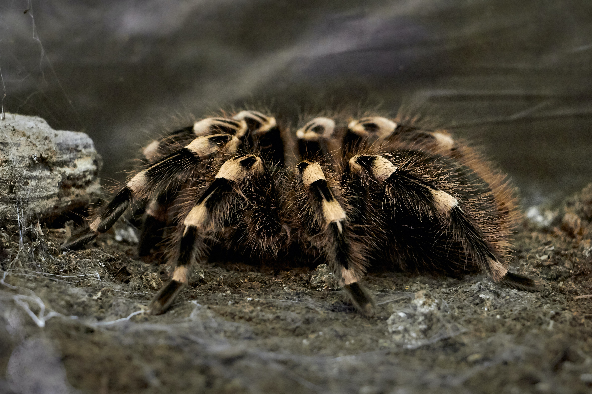
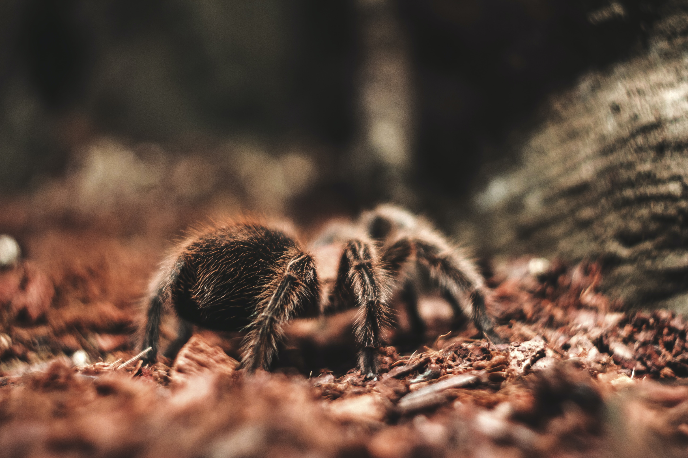
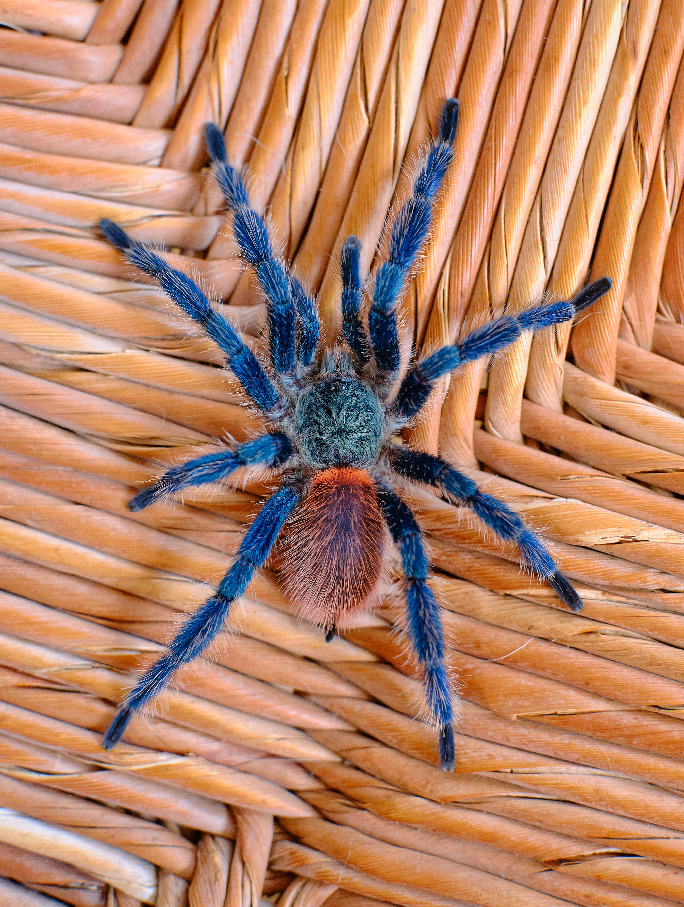

Tarantulas live and hunt in trees or near the ground.
Tarantulas are a giant and venomous species of spiders.It can be found in the wild and it is one of the best insects hunters.Tarantulas are large, hairy-looking, quick-witted, fierce predators.Tarantulas mostly live in or on trees and hunt there.Some people also roast them and eat thm after. Although they are harmless to humans unless u scare them and they bite you that can be a death experience.They can live to about 15/25 years.
Made by Aristidi